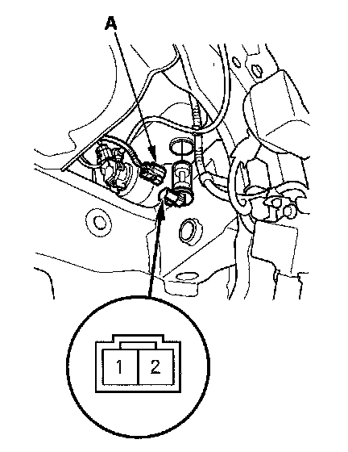

Washer Fluid Level Switch Test
Washer Fluid Level Switch Test1. Remove the right inner fender.

2. Disconnect the 2P connector (A) from the washer fluid level switch.
3. Remove the washer fluid level switch from the washer reservoir.
NOTE: Fluid may flow out of the opening.
4. Check for continuity between the No. 1 and No. 2 terminals in each float position.
- There should be continuity when the float is down.
- There should be no continuity when the float is up.
5. If the continuity is not as specified, replace the switch.